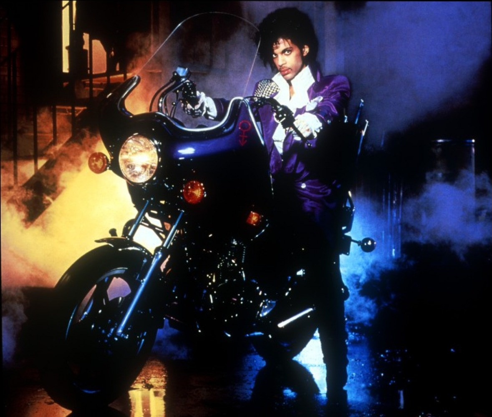

About
Prince Rogers Nelson (June 7, 1958 – April 21, 2016) was an American singer-songwriter, musician, and record producer. The recipient of numerous awards and nominations, he is widely regarded as one of the greatest musicians of his generation.[3] He was known for his flamboyant, androgynous persona;[4][5] his wide vocal range, which included a far-reaching falsetto and high-pitched screams; and his skill as a multi-instrumentalist, often preferring to play all or most of the instruments on his recordings.[6] Prince produced his albums himself, pioneering the Minneapolis sound. His music incorporated a wide variety of styles, including funk, R&B, rock, new wave, soul, synth-pop, pop, jazz, and hip hop. Born and raised in Minneapolis, Prince signed a record deal with Warner Bros. Records at the age of 19, soon releasing the albums For You (1978) and Prince (1979). He went on to achieve critical success with the influential albums Dirty Mind (1980), Controversy (1981), and 1999 (1982). His sixth album, Purple Rain (1984), was recorded with his new backing band the Revolution, and was also the soundtrack to the film of the same name in which he starred. Purple Rain garnered continued success for Prince and was a major commercial achievement, spending six consecutive months atop the Billboard 200 chart.[7] The soundtrack also won Prince the Academy Award for Best Original Song Score. After disbanding the Revolution, Prince released the album Sign o' the Times (1987), widely hailed by critics as the greatest work of his career. In the midst of a contractual dispute with Warner Bros. in 1993, he changed his stage name to the unpronounceable symbol Logo. Hollow circle above downward arrow crossed with a curlicued horn-shaped symbol and then a short bar (known to fans as the "Love Symbol") and was often referred to as The Artist Formerly Known as Prince (or TAFKAP) or simply The Artist.[8][9] After signing with Arista Records in 1998, Prince reverted to his original name in 2000. Over the next decade, six of his albums entered the U.S. top 10 charts.[10][11] In April 2016, at the age of 57, Prince died after accidentally overdosing on fentanyl at his Paisley Park home and recording studio in Chanhassen, Minnesota. He was a prolific musician who released 39 albums during his life, with a vast array of unreleased material left in a custom-built bank vault underneath his home after his death, including fully completed albums and over 50 finished music videos.[12] He also released songs under multiple pseudonyms during his life, as well as writing songs that were made popular after being covered by other musicians, most notably "Nothing Compares 2 U" by Sinéad O'Connor and "Manic Monday" by the Bangles.[13] Estimates of the complete number of songs written by Prince range anywhere from 500 to well over 1,000.[14] Released posthumously, his demo albums Piano and a Microphone 1983 (2018) and Originals (2019) both received critical acclaim. Prince sold over 120 million albums worldwide, ranking him among the best-selling music artists of all time. His awards included the Grammy President's Merit Award, the American Music Awards for Achievement and of Merit, the Billboard Icon Award, an Academy Award, and a Golden Globe Award. He was inducted into the Rock and Roll Hall of Fame in 2004, the UK Music Hall of Fame in 2006, and the Rhythm and Blues Music Hall of Fame in 2016, and was inducted twice into the Black Music & Entertainment Walk of Fame in 2022.
